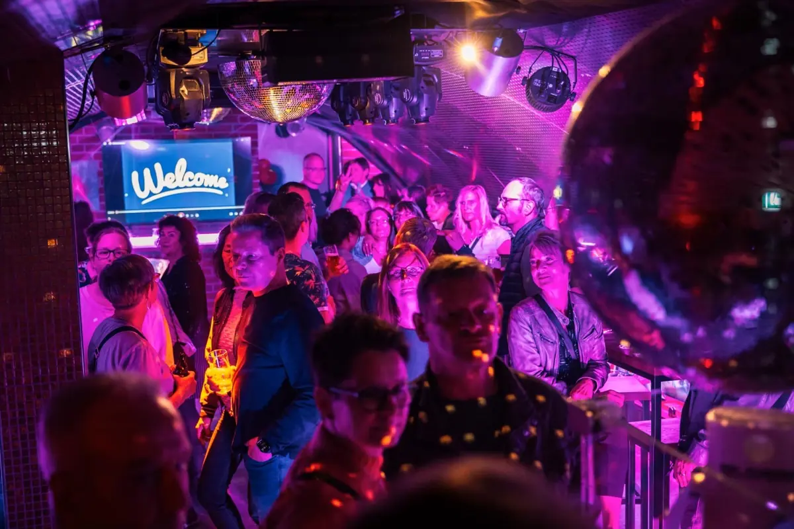

Disco-Beats der 70er
Glitzerkugel, Funk und Tanzfläche: Die goldenen Disco-Jahre sind das Fundament der Zeitreise. Hier tanzt man zu den Klassikern, die jeder kennt.
- Disco
- Funk
- Soul

Bar · Celle
Dein Soundtrack der 70er, 80er & 90er.
Cocktails, Beats & das Gefühl von damals.
Die Story
Willkommen in der Zeitreise – Celles einzigartiger Bar, die dich Abend für Abend zurück in die goldenen Jahrzehnte der Musik entführt. Von Disco-Beats der 70er über Synthie-Pop der 80er bis hin zu den Grunge- und Eurodance-Hits der 90er – hier wird jeder Song zur Erinnerung.
Ob legendäre Partynächte, After-Work-Drinks oder einfach nur gute Vibes mit Freunden – bei uns trifft nostalgischer Charme auf moderne Bar-Kultur. Die perfekte Mischung aus Cocktails, Beats und dem Gefühl von damals.
Du findest uns in der Hehlentorstraße 16 in 29221 Celle.

Wähle dein Jahrzehnt
Glitzerkugel, Funk und Tanzfläche: Die goldenen Disco-Jahre sind das Fundament der Zeitreise. Hier tanzt man zu den Klassikern, die jeder kennt.

Neon, Synthesizer und Ohrwürmer zum Mitsingen. Die 80er bringen die Tanzfläche zum Leuchten – laut mitsingen ausdrücklich erlaubt.

Von Grunge bis Eurodance: Die Hits der 90er lassen die Tanzfläche beben – bis spät in die Nacht.
Was dich erwartet
Die perfekte Mischung aus Cocktails, Beats und dem Gefühl von damals.
Freitag & Samstag: legendäre Partynächte mit den Hits dreier Jahrzehnte.
After-Work-Drinks oder einfach gute Vibes mit Freunden in nostalgischem Ambiente.
Aktuelle Events und Änderungen findest du immer auf unserem Instagram-Kanal.
Einblicke
Wann geht's los?
* Änderungen bei Events möglich – schaut auf Instagram für Updates!
| Montag | Geschlossen |
|---|---|
| Dienstag | Geschlossen |
| Mittwoch | Geschlossen |
| Donnerstag | Geschlossen |
| Freitag | – |
| Samstag | – |
| Sonntag | Geschlossen |
Private Veranstaltungen
Kein Problem! Die Zeitreise kann nach Absprache auch exklusiv für deine private Feier gebucht werden – ob Geburtstag, Firmen-Event oder Motto-Party. Oder reserviere einfach einen Tisch für Freitag oder Samstag. Meld dich einfach bei uns!
Gut zu wissen
Die Bar Zeitreise ist freitags und samstags von 20:00 bis 01:00 Uhr geöffnet. An den anderen Tagen ist geschlossen. Bei Events sind Änderungen möglich – aktuelle Infos gibt es auf Instagram.
Die Bar Zeitreise befindet sich in der Hehlentorstraße 16, 29221 Celle (Niedersachsen).
Die Zeitreise spielt Musik der 70er, 80er und 90er Jahre: Disco-Beats der 70er, Synthie-Pop der 80er sowie Grunge- und Eurodance-Hits der 90er.
Ja. Die Zeitreise kann nach Absprache exklusiv für private Feiern gebucht werden, zum Beispiel für Geburtstag, Firmen-Event oder Motto-Party. Anfragen sind telefonisch unter 0176 / 10383288 oder über das Formular möglich.
Du erreichst die Bar telefonisch unter 0176 / 10383288, über das Anfrageformular oder über Instagram (@projekt_zeitreise_).
Folge uns
Events, Specials und Änderungen der Öffnungszeiten – alles auf Instagram.
Instagram @projekt_zeitreise_ FacebookFinde uns
Bar Zeitreise
Hehlentorstraße 16
29221 Celle
Telefon: 0176 / 10383288
Instagram: @projekt_zeitreise_
Route planenKarte (OpenStreetMap)
Beim Laden wird eine Verbindung zu den Servern der OpenStreetMap Foundation aufgebaut. Mehr dazu in der Datenschutzerklärung.